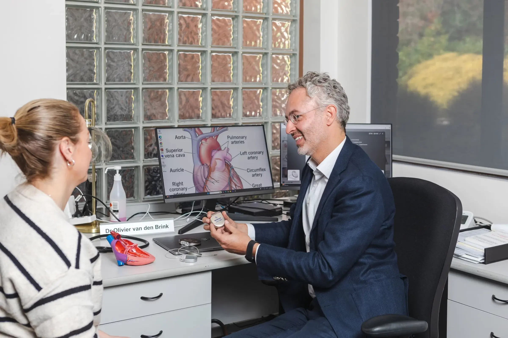

Rhythm management
Diagnosis and treatment of heart rhythm disorders, from monitoring to ablation.

- Procedures & tests
- 09
- Specialists
- Clinics
- 07
- Bookings
- 03 9070 6116
Procedures & tests
Select a procedure to read what it involves, how to prepare and what to expect.
01Implantable Loop Recorder InsertionAn implantable loop recorder is a type of heart-monitoring device that records your heart rhythm continuously for up to three years. It records the electrical signals of your heart and allows remote monitoring…
An implantable loop recorder is a type of heart-monitoring device that records your heart rhythm continuously for up to three years. It records the electrical signals of your heart and allows remote monitoring by way of a small device inserted just beneath the skin of the chest.
Why is it Done?
An implantable loop recorder can help answer questions about your heart that other heart-monitoring devices don’t provide. It allows for long-term heart rhythm monitoring. It can capture information that a standard electrocardiogram (ECG) or Holter monitor misses because some heart rhythm abnormalities occur infrequently.
For example, if you have a standard ECG to help figure out why you’re having fainting spells, it will only record any related heart rhythm abnormalities during the few minutes of the monitoring period — usually about five minutes. Because an implantable loop recorder monitors your heart signals for a much longer time, it’s more likely to capture what your heart is doing during your next fainting spell. This information may help your doctor make a definite diagnosis and develop a treatment plan.
Implantable loop recorders are one of the newer heart-monitoring devices. Researchers have evaluated their safety and benefit over the last 10 years. Studies show that implantable loop recorders have a higher rate of diagnosis of heart rhythm problems than other monitoring devices.
Implantable loop recorders are also of value in people who had a stroke. Long-term heart monitoring uncover heart rhythm problems that caused the stroke better than 24-hour monitoring. Doctors used these results to guide treatment with blood-thinning drugs (anti-coagulation therapy) to prevent another stroke.
What Can You Expect?
You will need to undergo a minor surgical procedure to place the implantable loop recorder. Risks of the procedure include infection or a reaction to the device that causes redness at the incision site.
Before the Procedure
You don’t need to do anything special to prepare for this procedure.
During the Procedure
The procedure to insert the heart monitor is usually done in a cath lab, with a local anaesthetic. Your doctor makes a tiny incision, inserts the device, which is smaller than a key or a thumb drive, and closes the incision. The device stays in place for up to three years.
After the Procedure
The procedure to insert an implantable loop recorder has some risk because it involves minor surgery. Your care team will advise you to watch your incision for signs of infection and, perhaps, to limit activities until the wound heals.
The device records the electrical impulses of your heart and transmits them automatically to your doctor by way of the internet and wireless technology. All you need to do is keep the transmission monitor your doctor gives you beside your bed. Transmissions occur while you’re asleep. You can also activate the data transmission process yourself. In addition, your doctor may ask you to keep a diary of your symptoms.
Your doctor will interpret the results of your test and call you if he or she has any concerns. You’ll likely need to see your doctor once or twice a year for routine check-ups while the device is in place.
An implantable loop recorder is invisible and doesn’t interfere with your daily activities. It has no patches or wires, and you don’t have to worry about getting the device wet while bathing or swimming. These devices are supposed to be safe for use during a medical imaging procedure called magnetic resonance imaging (MRI), but let your doctor know about your implant before you schedule such a test.
It’s also possible an implantable loop recorder might set off metal detectors, for example, at an airport. Your doctor can provide you with a device identification card to carry with you for such situations.
02Pacemaker InsertionA pacemaker is a small device with two parts — a generator and wires (leads, or electrodes) — that’s placed under the skin in your chest to help control your heartbeat.
A pacemaker is a small device with two parts — a generator and wires (leads, or electrodes) — that’s placed under the skin in your chest to help control your heartbeat.
People may need a pacemaker for a variety of reasons — mostly due to one of a group of conditions called arrhythmias, in which the heart’s rhythm is abnormal.
Normal aging of the heart may disrupt your heart rate, making it beat too slowly. Heart muscle damage resulting from a heart attack is another common cause of disruptions of your heartbeat.
Some medications can affect your heart rate as well. For some, genetic conditions cause an abnormal heart rate. Regardless of the underlying cause of an abnormal heart rate, a pacemaker may fix it.
A pacemaker can often be implanted in your chest with a minor surgery. You may need to take some precautions in your daily life after your pacemaker is installed.
Types of Pacemaker
Cardiac Resynchronization Therapy
Pacemakers are implanted to help control your heartbeat. They can be implanted temporarily to treat a slow heartbeat after a heart attack, surgery or overdose of medication.
Pacemakers can also be implanted permanently to correct a slow heartbeat (bradycardia) or, in some cases, to help treat heart failure.
Smaller pacemakers about the size of a pill have been developed and are currently undergoing clinical trials. This new, leadless device can be implanted directly into the heart, where it emits an electrical impulse to control the heartbeat. Because a lead isn’t required, this device can minimize the risk of infection and speed recovery time.
How Your Heart Beats
To understand how a pacemaker works, it helps to know how your heart beats.
The heart is a muscular, fist-sized pump with four chambers, two on the left side and two on the right. The upper chambers are the right and left atria. The lower chambers are the right and left ventricles.
For your heart to function properly, the heart’s chambers must work in a coordinated fashion. Your heart must also beat at an appropriate rate — normally from 60 to 100 beats a minute in resting adults. If your heart beats too slowly or too rapidly, not enough blood flows through your body, leading to fatigue, fainting, shortness of breath, confusion, and other signs and symptoms.
Your heart’s electrical system controls the chambers’ pumping action. A normal heartbeat begins in your right atrium, in the sinus node. This cluster of cells — your natural pacemaker — acts like a spark plug, generating regular electrical impulses that travel through specialized muscle fibres.
When an electrical impulse reaches both the right and left atria, they contract and squeeze blood into the ventricles. After a split-second delay to allow the ventricles to fill, the impulse reaches the ventricles, making them contract and pump blood to the rest of your body.
What a Pacemaker Does
An implanted electronic pacemaker mimics the action of your natural pacemaker. An implanted pacemaker consists of two parts:
- The pulse generator. This small metal container houses a battery and the electrical circuitry that regulates the rate of electrical pulses sent to your heart.
- Leads (electrodes). One to three flexible, insulated wires are each placed in a chamber, or chambers, of your heart and deliver the electrical pulses to adjust your heart rate.
Pacemakers monitor your heartbeat and, if it’s too slow, the pacemaker will speed up your heart rate by sending electrical signals to your heart. In addition, most pacemakers have sensors that detect body motion or breathing rate, which signals the pacemaker to increase your heart rate during exercise to meet your body’s increased need for blood and oxygen.
Single Chamber Pacemaker
This type of pacemaker usually carries electrical impulses from the pulse generator to the right ventricle of your heart.
Dual Chamber Pacemaker
A dual chamber pacemaker carries electrical impulses from the pulse generator to both the right ventricle and the right atrium of your heart. The impulses help control the timing of contractions between the two chambers.
Biventricular Pacemaker
A biventricular pacemaker is a treatment option for people with heart failure whose hearts’ electrical systems have been damaged. Unlike a regular pacemaker, a biventricular pacemaker stimulates both of the lower chambers of the heart (the right and left ventricles) to make the heart beat more efficiently.
A biventricular pacemaker paces both ventricles so that all or most of the ventricular muscle pumps together. This allows your heart to pump blood more effectively. Because this treatment resets the ventricles’ pumping mechanism, it’s also referred to as cardiac resynchronization therapy (CRT).
Risks
Complications from having surgery to implant your pacemaker are uncommon, but could include:
- Infection where the pacemaker was implanted
- Allergic reaction to the dye or anaesthesia used during your procedure
- Swelling, bruising or bleeding at the generator site, especially if you are taking blood thinners
- Damage to your blood vessels or nerves near the pacemaker
- Collapsed lung
Life-threatening complications of pacemaker implantation are rare.
How to Prepare
Before your doctor decides if you need a pacemaker, you’ll have several tests done to find out the cause of your irregular heartbeat. These could include:
- Electrocardiogram. In this non-invasive test, sensor pads with wires attached, called electrodes, are placed on your chest and sometimes your limbs to measure your heart’s electrical impulses. Your heart’s beating pattern can offer clues to the type of irregular heartbeat you have.
- Holter monitoring. Also known as an ambulatory monitor, a Holter monitor records your heart rhythms for an entire 24-hour period. Wires from electrodes on your chest go to a battery-operated recording device. While you’re wearing the monitor, you’ll keep a diary of your activities and symptoms. Your doctor will compare the diary with the electrical recordings to try to figure out the cause of your symptoms.
- Echocardiogram. This non-invasive test uses harmless sound waves that allow your doctor to see your heart without making an incision. During the procedure, a small instrument called a transducer is placed on your chest. It collects reflected sound waves (echoes) from your heart and transmits them to a machine that uses the sound wave patterns to compose images of your beating heart on a monitor. These images show how well your heart is functioning, and recorded pictures allow your doctor to measure the size and thickness of your heart muscle.
- Stress test. Some heart problems occur only during exercise. For a stress test, an electrocardiogram is taken before and immediately after walking on a treadmill or riding a stationary bike. In some cases, an echocardiogram or nuclear imaging may be done.
What to Expect
Before the Procedure
Surgery to implant the pacemaker is usually performed while you’re awake and typically takes a few hours. Before the procedure, you are taken to a special room (called a preparation room or holding area) to start an intravenous (IV) line.
Most pacemaker implantations are done using local anaesthesia to numb the area of any incisions. You may receive additional IV medication to help you relax. The implantation is done in a room with special X-ray equipment. Your chest is cleaned with an antibacterial soap, and an IV line is placed in your arm on the same side as the pacemaker.
During the Procedure
During surgery, one or more flexible, insulated wires (leads, or electrodes) are inserted into a major vein under or near your collarbone and guided to your heart with the help of X-ray images. One end of each wire is secured to the appropriate position in your heart, while the other end is attached to the pulse generator, which is usually implanted under the skin beneath your collarbone.
After the Procedure
You’ll usually stay in the hospital for one day after having a pacemaker implanted. Before you leave, your pacemaker is programmed to fit your particular pacing needs. A return visit is often scheduled to make sure your pacemaker’s settings are correct.
After that, most pacemakers can be checked remotely using wireless technology. Using your mobile phone or radiofrequency signals, your pacemaker transmits and receives information between you and your doctor’s office, where your doctor can access the data — including your heart rate and rhythm, how your pacemaker is functioning, and remaining battery life.
Remote transmissions can be made at scheduled intervals or at unscheduled times if your pacemaker sends an alert, or you can send a transmission if you have a concern. Remote technology means fewer trips to the doctor’s office, but you’ll still need to be seen by your doctor in person for scheduled check-ups.
After your procedure to implant your pacemaker, your doctor may recommend that you avoid vigorous exercise, heavy lifting or lifting your arms above your shoulders for about six weeks. You may have some aches and pains near the area where your pacemaker was implanted. These pains can be relieved with over-the-counter medicines, such as paracetamol, but talk to your doctor before taking any pain relievers.
Special Precautions
It’s unlikely that your pacemaker would stop working properly because of electrical interference. Still, you’ll need to take a few precautions:
- Mobile phones. It’s safe to talk on a mobile phone, but avoid placing your mobile phone directly over your pacemaker implantation site when the phone is turned on. Although unlikely, your pacemaker could misinterpret the mobile phone signal as a heartbeat and withhold pacing, producing symptoms, such as sudden fatigue.
- Security systems. Passing through an airport metal detector won’t interfere with your pacemaker, although the metal in it may sound the alarm. But avoid lingering near or leaning against a metal-detection system. If security personnel insist on using a hand-held metal detector, ask them not to hold the device near your pacemaker any longer than necessary or ask for an alternative form of personal search. To avoid potential problems, carry an ID card stating that you have a pacemaker.
- Medical equipment. If a doctor is considering any medical procedure that involves intensive exposure to electromagnetic energy, tell him or her that you have a pacemaker. Such procedures include magnetic resonance imaging, therapeutic radiation for cancer treatment and shock wave lithotripsy, which uses shock waves to break up large kidney stones or gallstones. If you’re having surgery, a procedure to control bleeding (electrocautery) also can interfere with pacemaker function.
- Power-generating equipment. Stand at least 2 feet (60 centimeters) from welding equipment, high-voltage transformers or motor-generator systems. If you work around such equipment, your doctor can arrange a test in your workplace to determine whether it affects your pacemaker.
- Devices that are unlikely to interfere with your pacemaker include microwave ovens, televisions and remote controls, radios, toasters, electric blankets, electric shavers, and electric drills.
Results
Once your pacemaker is implanted, the battery should last five to 15 years, which is the average battery life. When a pacemaker’s battery wears out, the pacemaker’s pulse generator is replaced. The leads of your pacemaker can be left in place — though they may need to be replaced eventually — and the procedure to change your pacemaker’s battery is often quicker and requires less recovery time than the procedure to first implant your pacemaker.
Pacemakers are a standard treatment for many conditions affecting your heart’s electrical system. By preventing a slow heart rate, pacemakers can treat symptoms, such as fatigue, lightheadedness and fainting. Because most of today’s pacemakers automatically adjust your heart rate to match your level of physical activity, they can allow you to resume a more active lifestyle.
Pacemakers and End-of-Life Issues
If you have a pacemaker and become terminally ill with a condition unrelated to your heart, such as cancer, it’s possible that your pacemaker could prolong the process of dying. Doctors and researchers have varied opinions on turning off a pacemaker in end-of-life situations.
Talk to your doctor if you have a pacemaker and are concerned about turning it off. You may also want to talk to family members or another person designated to make medical decisions for you about what you’d like to do in end-of-life care situations.
03Defibrillator InsertionAn implantable cardioverter-defibrillator (ICD) is placed in your chest to reduce your risk of dying if the lower chambers of your heart (ventricles) go into a dangerous rhythm and stop beating effectively…
An implantable cardioverter-defibrillator (ICD) is placed in your chest to reduce your risk of dying if the lower chambers of your heart (ventricles) go into a dangerous rhythm and stop beating effectively (cardiac arrest).
You might need an ICD if you have a dangerously fast heartbeat (ventricular tachycardia) or a chaotic heartbeat that keeps your heart from supplying enough blood to the rest of your body (ventricular fibrillation).
ICDs detect and stop abnormal heartbeats (arrhythmias). The device continuously monitors your heartbeat and delivers electrical pulses to restore a normal heart rhythm when necessary.
An ICD differs from a pacemaker — another implantable device used to help control abnormal heart rhythms.
Why is it done?
You’ve likely seen TV shows in which hospital workers “shock” an unconscious person out of cardiac arrest with electrified paddles. An ICD does the same thing only internally and automatically when it detects an abnormal heart rhythm.
An ICD is surgically placed under your skin, usually below your left collarbone. One or more flexible, insulated wires (leads) run from the ICD through your veins to your heart.
Because the ICD constantly monitors for abnormal heart rhythms and instantly tries to correct them, it helps treat cardiac arrest, even when you are far from the nearest hospital.
How an ICD works
When you have a rapid heartbeat, the wires from your heart to the device transmit signals to the ICD, which sends electrical pulses to regulate your heartbeat. Depending on the problem with your heartbeat, your ICD could be programmed for the following therapies:
- Low-energy pacing therapy. You may feel nothing or a painless fluttering in your chest when your ICD responds to mild disruptions in your heartbeat.
- Defibrillation therapy. This is the strongest form of electrical therapy used to restore a normal heartbeat. During this therapy, it may feel as if you’re being kicked in the chest, and it might knock you off your feet.
- The pain from this therapy usually lasts only a second. There should be no discomfort after the shock ends.
An ICD can also be programmed to perform other functions, which include:
- Antitachycardia. If you have an unusually fast heart rate, the ICD delivers painless, low-energy impulses that pace or stimulate the heart to beat normally. This can prevent the need for cardioversion or defibrillation.
- Pacemaker. Most modern ICDs can also function as a pacemaker, delivering low-energy impulses that stimulate the heart to beat normally.
- Recording heart activity. The ICD records information about variations in your heart’s electrical activity and rhythm. This information helps your doctor evaluate your heart rhythm problem and, if necessary, reprogram your ICD.
Subcutaneous ICD
Subcutaneous Implantable Cardioverter-Defibrillator (S-ICD)
A subcutaneous ICD (S-ICD), a newer type of ICD, is available at Total Cardiovascular Care. An S-ICD is implanted under the skin at the side of the chest below the armpit. It’s attached to an electrode that runs along your breastbone. You may be a candidate for this device if you have structural defects in your heart that prevent attaching wires to the heart your blood vessels, or if you have other reasons for wanting to avoid traditional ICDs.
Implanting a subcutaneous ICD is less invasive than an ICD that attaches to the heart, but the device is larger in size than an ICD.
Who needs an ICD?
You’re a candidate for an ICD if you’ve had sustained ventricular tachycardia, survived a cardiac arrest, or fainted from a ventricular arrhythmia. You might also benefit from an ICD if you have:
- A history of coronary artery disease and heart attack that has weakened your heart.
- A heart condition that involves abnormal heart muscle, such as enlarged (dilated cardiomyopathy) or thickened (hypertrophic cardiomyopathy) heart muscle.
- An inherited heart defect that makes your heart beat abnormally. These include long QT syndrome, which can cause ventricular fibrillation and death even in young people with no signs or symptoms of heart problems.
- Having other rare conditions such as Brugada syndrome and arrhythmogenic right ventricular dysplasia also may mean you need an ICD.
Risks
Risks associated with ICD implantation are uncommon but may include:
- Infection at the implant site
- Allergic reaction to the medications used during the procedure
- Swelling, bleeding or bruising where your ICD was implanted
- Damage to the vein where your ICD leads are placed
- Bleeding around your heart, which can be life-threatening
- Blood leaking through the heart valve where the ICD lead is placed
- Collapsed lung (pneumothorax)
How to Prepare
To determine whether you need an ICD, your doctor might perform a variety of diagnostic tests, which may include:
- Electrocardiography (ECG). In this non-invasive test, sensor pads with wires attached (electrodes) are placed on your chest and sometimes limbs to measure your heart’s electrical impulses. Your heart’s beating pattern can offer clues to the type of irregular heartbeat you have.
- Echocardiography. This non-invasive test uses harmless sound waves that allow your doctor to see your heart without making an incision. During the procedure, a small, plastic instrument called a transducer is placed on your chest. It collects reflected sound waves (echoes) from your heart and transmits them to a machine that uses the sound wave patterns to compose images of your beating heart on a monitor. These images show how well your heart is functioning, and recorded images allow your doctor to measure the size and thickness of your heart muscle.
- Holter Monitoring. Also known as an ambulatory electrocardiogram monitor, a Holter monitor records your heart rhythm for 24 hours. Wires from electrodes on your chest go to a battery-operated recording device carried in your pocket or worn on a belt or shoulder strap. While wearing the monitor, you’ll keep a diary of your activities and symptoms. Your doctor will compare the diary with the electrical recordings and try to figure out the cause of your symptoms.
- Electrophysiology study (EPS). Electrodes are guided through blood vessels to your heart and used to test the function of your heart’s electrical system. This can identify whether you have or might develop heart rhythm problems.
It’s likely you’ll be asked not to eat or drink for at least six hours before your surgery. Talk to your doctor about the medications you take and whether you should continue to take them before your procedure to implant an ICD.
What Can You Expect?
During the Procedure
Implantable Cardioverter Defibrillator
Usually, the procedure to implant an ICD can be performed with numbing medication and a sedative that relaxes you but allows you to remain aware of your surroundings. In some cases, general anaesthesia, which puts you to sleep, may be used.
The procedure usually takes a few hours. During surgery, one or more flexible, insulated wires (leads) are inserted into veins near your collarbone and guided, with the help of X-ray images, to your heart. The ends of the leads are secured to your heart, while the other ends are attached to the generator, which is usually implanted under the skin beneath your collarbone.
Occasionally, once the ICD is in place, your doctor will test it and program it for your heart rhythm problem. Testing the ICD might require speeding up your heart and then shocking it back into normal rhythm. We usually reserve this test for patients with subcutaneous ICDs.
After the Procedure
You’ll stay in the hospital one or two days, and the ICD might be tested once more before you’re discharged. Additional testing of your ICD usually doesn’t require surgery.
Treating Pain After Your Procedure
After surgery, you may have some pain in the incision area, which can remain swollen and tender for a few days or weeks. Your doctor might prescribe pain medication. As your pain lessens, you can take pain relievers, such as paracetamol.
When you’re released from the hospital, you’ll need to arrange for a ride home because you won’t be able to drive for at least 2 weeks.
Results
ICDs have become standard treatment for anyone who has survived cardiac arrest, and they’re increasingly used in people at high risk of sudden cardiac arrest. An ICD lowers your risk of sudden death from cardiac arrest more than medication alone.
Although the electrical shocks can be unsettling, there is evidence that the ICD is effectively treating your heart rhythm problem and protecting you from sudden death. Talk to your doctor about how to best care for your ICD.
After the procedure, you’ll need to take some precautions to avoid injuries and make sure your ICD works properly.
Short-term precautions
You’ll likely be able to return to normal activities such as exercise, work and sex soon after you recover from surgery. Follow your doctor’s instructions. For four weeks after surgery, your doctor might ask you to refrain from:
- Vigorous above-the-shoulder activities or exercises, including golf, tennis, swimming, bicycling, bowling or vacuuming
- Lifting anything weighing more than 2.5kg
- Playing contact sports
- Strenuous exercise programs
Long-Term Precautions
Problems with your ICD due to electrical interference are rare. Still, take precautions with the following:
- Mobile phones and other mobile devices. It’s safe to talk on a mobile phone, but avoid placing your mobile phone within about 15 centimeters of your ICD implantation site when the phone is turned on. Although unlikely, your ICD could mistake a mobile phone’s signal for a heartbeat and slow your heartbeat, causing symptoms such as sudden fatigue.
- Security systems. After surgery, you’ll receive a card that says you have an ICD. Show your card to airport personnel because the ICD may set off airport security alarms.Also, hand-held metal detectors often contain a magnet that can interfere with your ICD. Limit scanning with a hand-held detector to less than 30 seconds over the site of your ICD or make a request for a manual search.
- Medical equipment. Let doctors, medical technicians and dentists you see know you have an ICD. Some procedures, such as magnetic resonance imaging (MRI), magnetic resonance angiography (MRA), and radiofrequency or microwave ablation are not recommended if you have an ICD.
- Power generators. Stand at least 0.6 meters from welding equipment, high-voltage transformers or motor-generator systems. If you work around such equipment, your doctor can arrange a test in your workplace to see if the equipment affects your ICD.
- MP3 player headphones. Although the player itself poses little risk, the headphones may be a problem. Most contain a magnetic substance and can interfere with your ICD. Keep your headphones at least 15 centimeters from your ICD.
- Magnets. These might affect your ICD, so it’s a good idea to keep magnets at least 15 centimeters from your ICD site.
Devices that pose little or no risk to your ICD include microwave ovens, televisions and remote controls, AM/FM radios, toasters, electric blankets, electric shavers and electric drills, computers, scanners, printers, and GPS devices.
Driving Restrictions
If you have an ICD to treat ventricular arrhythmia, driving a vehicle presents a challenge. The combination of arrhythmia and shocks from your ICD can cause fainting, which would be dangerous while you’re driving.
The Austroads Fitness to Drive guidelines advise avoiding driving for two weeks after ICD placement, but talk to your doctor for specific recommendations. The guidelines discourage driving during the first six months after your procedure if your ICD was implanted due to a previous cardiac arrest or ventricular arrhythmia.
If you have no shocks during this period, you’ll likely be able to drive again. But if you then have a shock, with or without fainting, tell your doctor and follow his or her recommendations. In most cases, you’ll need to stop driving until you’ve been shock-free for another six months.
If you have an ICD but have no history of life-threatening arrhythmias, you can usually resume driving within two weeks after your procedure if you’ve had no shocks. Discuss your situation with your doctor.
You usually can’t get a commercial driver’s license if you have an ICD.
Battery Life
The lithium battery in your ICD can last up to seven years. The battery will be checked during regular check-ups, which should occur every three to six months. When the battery is nearly out of power, your old shock generator is replaced with a new one during a minor outpatient procedure.
ICDs and End-of-Life Issues
If you have an ICD and become terminally ill, your ICD could deliver unnecessary shocks. It’s easy to turn off your ICD, and turning it off may prevent unnecessary suffering.
Talk to your doctor about your wishes. Also talk to family members or another person designated to make medical decisions for you about what you’d like to do in end-of-life care situations.
04Aftercare
Ask our team about this service. Call 03 9070 6116 or request an appointment online.
05EP studies and Ablation for SVTAn electrophysiological study (often called EPS) is a procedure that examines the electrical function of the heart to determine the source and mechanism of abnormal heart rhythms (called arrhythmias). The…
An electrophysiological study (often called EPS) is a procedure that examines the electrical function of the heart to determine the source and mechanism of abnormal heart rhythms (called arrhythmias). The heart is a muscle pump, and the function of this pump is controlled by electrical activity which spreads across the heart and causes it contract.
An EPS involves using X rays to position small plastic wires (called catheters) through the venous blood vessels (from the groin) into various chambers of the heart. These catheters are equipped with metallic tips and rings (called electrodes) which allow them to detect electrical activity in the heart muscle. By interpreting the pattern of electrical signals detected by the catheters, the mechanism of the arrhythmia can be determined and a treatment strategy) devised (usually with catheter ablation – see below).
Why is it done?
Your doctor may recommend that you have an electrophysiological study if you have:
- Symptoms of racing heart (palpitations) and (usually) evidence of an abnormal fast rhythm captured on an electrical trace (electrocardiograph or ECG). Conditions which commonly indicate an electrophysiological study include: Supra-ventricular tachycardia (or SVT)
- Ventricular tachycardia (or VT)
- Abnormal findings on a resting ECG and the suspicion of arrhythmia
- Un-explained collapses or loss of consciousness and the suspicion of an arrhythmia
Because there’s a small risk of complications, electrophysiological studies are usually only performed where there is a high suspicion of an arrhythmia that can be treated by ablation, or where the results will change your management.
Catheter Ablation
Once the arrhythmia and its mechanism have been identified during the electrophysiological study, the culprit is usually an abnormal electrical connection, or a small area (or foci) of abnormal electrical activity. The treatment is to use a special type of catheter (called an ablation catheter) to deliver a small amount of targeted heat energy this area. This disrupts this pathway or focus (permanently) and can eliminate the cause of the arrhythmia. The vast majority of electrophysiological studies will involve an ablation of the arrhythmia source.
Risks
As with most procedures done on your heart, an electrophysiological study entails some risk, such as radiation exposure from the X-rays used. Major complications are extremely rare, though. Potential risks and complications include:
- Injury to the groin artery or vein
- Excessive bleeding
- Stroke or heart attack
- Damage to the electrical wiring (conduction system) of the heart requiring the need for a pacemaker
- Injury to the heart requiring urgent treatment or heart surgery
How you Prepare
Most electrophysiological studies are elective or scheduled in advance, giving you time to prepare.
Electrophysiological studies are performed in the cardiac catheterization (cath) lab of a hospital. Your health care team will give you specific instructions and talk to you about any medications you take. General guidelines include:
- Usually, if you are on medications to suppress arrhythmias (called anti-arrhythmic medications), these need to be stopped at least 5-7 days prior to the procedure. Your doctor will advise you exactly which medication(s) to stop and when. This is necessary because during the EPS, the arrhythmia will usually need to be induced so its mechanism can be identified and the appropriate ablation performed.
- Don’t eat or drink anything after midnight before your procedure.
- Take all your medications to the hospital with you in their original bottles. Ask your doctor about whether or not to take your usual morning medications.
- If you have diabetes, ask your doctor if you should take insulin or other oral medications before your procedure.
- If you are on blood-thinning medication, these sometimes need to be stopped beforehand. Ask your doctor about your blood thinners.
What you can expect?
Before the Procedure
Before your EPS procedure starts, your health care team will review your medical history, including allergies and medications you take. You’ll also empty your bladder and change into a hospital gown. You may have to remove contact lenses, eyeglasses, jewellery and hairpins.
During the Procedure
For the procedure, you lie flat on your back on an X-ray table. X-ray cameras may move over and around your head and chest during the procedure.
An IV line is inserted into a vein in your arm. You will be given a sedative through the IV to help you relax, as well as other medications and fluids. You’ll be very sleepy and may drift off to sleep during the procedure, but you’ll still be able to be easily awakened to follow any instructions.
Electrodes on your chest monitor your heart throughout the procedure. An EPS usually involves a number of additional stickers and patches placed on over the chest. A blood pressure cuff tracks your blood pressure and another device, a pulse oximeter, measures the amount of oxygen in your blood.
A small amount of hair may be shaved from your groin where a flexible tube (catheter) will be inserted under ultra-sound guidance, and on your chest where electrode stickers must attach. The area is washed and disinfected and then numbed with an injection of local anaesthetic.
A small incision is made at the entry site, and 2 or 3 short plastic tubes (sheath) are inserted into your groin vein. The catheter is inserted through the sheath into your blood vessel and carefully threaded to your heart. There are no pain sensation nerves in the blood vessels so this is not painful so threading the catheter shouldn’t cause pain, and you shouldn’t feel it moving through your body. Tell your health care team if you have any discomfort.
The catheters are positioned in the heart. The catheters can also be used to stimulate the heart at different rates and timings to both test the electrical function of the heart, and to see if the abnormal rhythm can be induced. You may feel these paced beats and they do not cause pain or discomfort. Inducing the arrhythmia during an EPS is safe and usually desirable as it allows the mechanism of the arrhythmia to be determined, and provides a clear endpoint for the procedure after ablation. They do not cause any harm to your heart. You will commonly feel your heart racing during this time, this is expected.
Often, to aid in inducing the arrhythmia, a medication called isoprenaline (a form of adrenaline) may be administered through the drip to stimulate the heart. This may cause a flushing sensation as well as sweating and palpitations. This is expected and is short-lived as the medication wears off very quickly. If you experience discomfort, please let the team know and we can we can make you more comfortable.
Occasionally an additional computer system called a ‘mapping system’ may be used to help treat more complex arrhythmias. This allows the catheters and the internal structure of the heart chambers to be visualised in 3D and real-time without the need for X-rays, so that the pattern of complex arrhythmias can be determined.
Usually ablation is required to treat the arrhythmia. This involves the delivery of a small amount of heat energy to the culprit electrical pathway. This usually occurs over a few minutes and occasionally may cause some mild chest discomfort. Additional analgesia will be given in anticipation of this.
Having an EPS, including catheter ablation takes between 60-120 minutes depending on how readily the arrhythmia can be induced and how much ablation is required. Preparation and post-procedure care can add more time.
After the Procedure
When the EPS is over, the catheters and plastic tubes are removed from your arm or groin and the incision is closed with manual pressure or occasionally a temporary stitch or an air-cushion clamp.
You’ll be taken to a recovery area for observation and monitoring. When your condition is stable, you return to your own room, where you’re monitored regularly.
You’ll need to lie flat for a few hours to avoid bleeding. During this time, pressure may be applied to the incision to prevent bleeding and promote healing.
You may be able to go home the same day, or you may have to remain in the hospital overnight. Drink plenty of fluids to help flush the dye from your body. If you’re feeling up to it, have something to eat.
Ask your health care team when to resume taking medications, bathing or showering, working, and doing other normal activities. Avoid strenuous activities and heavy lifting for several days.
Your puncture site is likely to remain tender for a while. It may be slightly bruised and have a small bump.
Call your doctor’s office if:
· You notice bleeding, new bruising or swelling at the catheter site
· You develop increasing pain or discomfort at the catheter site
· Weakness or numbness in the leg or arm where the catheter was inserted
· You develop chest pain or shortness of breath
If the catheter site is actively bleeding and doesn’t stop after you’ve applied pressure to the site, contact 000 or emergency medical services. If the catheter site suddenly begins to swell, contact 000 or emergency medical services.
Results
An EPS can diagnose many common cardiac arrhythmias and the accompanying ablation can treat the vast majority of these. The success rates depend on the type of arrhythmia being treated. These conditions include.
- The most common types of SVT (either AV nodal re-entry tachycarda (AVNRT) or atrio-ventricular re-entry tachycardia (AVRT)), have success rates after a single procedure of over 95% with no further need for ongoing anti-arrhythmic medications.
- In the less common arrhythmia caused by an over active focus (focal atrial or ventricular tachycardia), success rates vary from 60-90% depending on the location of the culprit focus. Occasionally a second procedure may be needed.
- Very rarely, an electrical pathway can be in an unsafe or dangerous location to ablate due to an undue risk of injury to cardiac structures (such as a coronary artery or the AV node). Your doctor will discuss alternative treatment options in this rare scenario.
- In cases where an EPS is performed as a purely diagnostic tool, the results can help diagnose rare conditions or help determine if a pacemaker or defibrillator may benefit you.
06Catheter Ablation for Atrial FibrillationAtrial fibrillation (or AF) is a the most common electrical disorder of the heart. It causes the heart to beat fast and irregular. It can result in symptoms such as palpitations, shortness of breath and…
Atrial fibrillation (or AF) is a the most common electrical disorder of the heart. It causes the heart to beat fast and irregular. It can result in symptoms such as palpitations, shortness of breath and lethargy. It predisposes to stroke and, in some cases, may seriously affect the heart function.
The pulmonary veins, the veins which deliver blood back the heart from the lungs, are also the source of electrical activity that triggers AF in vast majority of cases. AF ablation is a minimally invasive heart procedure using catheters introduced from the groin (or femoral) vein into the heart. These catheters are used to deliver either heating (called radiofrequency or RF) or freezing energy (called cryoablation) around the outside of the pulmonary veins, so that this tissue is no longer able to conduct electrical impulses from the pulmonary veins to the rest of the heart. The veins therefore become ‘electrically isolated’ from the rest of the heart, and the electrical activity which previously triggered AF, is no longer able to do so. There is considerable evidence that AF ablation is more effective than medications in eliminating or reducing the frequency of AF.
Why is it Done?
In some patients, medications (called anti-arrhythmic medication) can control symptoms of AF, however, in many patients, these medications are ineffective, poorly tolerated or long-term therapy is considered undesirable. For these patients, catheter ablation of AF is an effective treatment option. It can control or eliminate symptoms, and potentially avoid the need for long-term anti-arrhythmic medications. The decision to proceed with an AF ablation is a shared process between you and your doctor after a detailed discussion of the potential risks and expected benefits.
What Can You Expect?
You will need to undergo a minor surgical procedure to place the implantable loop recorder. Risks of the procedure include infection or a reaction to the device that causes redness at the incision site.
Risks
It is not uncommon to experience some minor bruising from the access site in the leg, and some mild irritation in the chest in the first few days following the procedure. This is anticipated.
Serious risks associated with AF ablation are rare. However, they are not zero and some can be serious. These can include:
- Injury to the groin blood vessel (1:200-400)
- Stroke or heart attack (1:400-800)
- Cardiac tamponade (build-up of fluid/blood around the heart) (1:500-1000)
- Injury to phrenic nerve (1:200)
- Complication requiring emergency surgery (1:500-1000)
- Atrio-oesophageal fistula (1:3000-4000) – developing abnormal connection between food pipe and heart.
The incidence of serious complications following AF ablation is low, but around 1-1.5%. For this reason, AF ablation is usually offered to those patients who have failed or are unable or unwilling to take anti-arrhythmic medication, rather than a first line treatment
How you Prepare
Almost all AF ablation are elective or scheduled in advance, giving you time to prepare.
AF ablations are performed in the cardiac catheterization (cath) lab of a hospital. Your health care team will give you specific instructions and talk to you about any medications you take. General guidelines include:
- Medications to suppress arrhythmias (called anti-arrhythmic medications), may need to be stopped at least 5-7 days prior to the procedure. Your doctor will advise you if this is needed and exactly which medication(s) to stop and when.
- Don’t eat or drink anything after midnight before your procedure.
- Take all your medications to the hospital with you in their original bottles. Ask your doctor about whether or not to take your usual morning medications.
- If you have diabetes, ask your doctor if you should take insulin or other oral medications before your procedure.
- Blood-thinning medication usually need to be continued. Your doctor will advise if these need to be withheld prior.
What you can expect?
Before the Procedure
Before your procedure starts, your health care team will review your medical history, including allergies and medications you take. You’ll also empty your bladder and change into a hospital gown. You may have to remove contact lenses, eyeglasses, jewellery and hairpins.
During the Procedure
For the procedure, you lie flat on your back on an X-ray table. X-ray cameras may move over and around your head and chest during the procedure. AF ablation procedures usually require a general anaesthetic which an anaesthetist will administer. Whilst under anaesthesia, a special ultrasound probe is positioned in the food pipe (oesophagus) which provides high resolution, real-time images of the heart. This is important to make sure there are no blood clots in the heart, and to ensure the catheters are correctly guided to the left atrium.
Electrodes on your chest monitor your heart throughout the procedure. An EPS usually involves a number of additional stickers and patches placed on over the chest. A blood pressure cuff tracks your blood pressure and another device, a pulse oximeter, measures the amount of oxygen in your blood.
A small amount of hair may be shaved from your groin where a flexible tube (catheter) will be inserted, and on your chest where electrode sticker must attach. The area is washed and disinfected and then numbed with an injection of local anaesthetic.
A small incision is made at the entry site, and 3 to 4 short plastic tubes (sheath) are inserted into your groin vein under ultrasound guidance. Catheters is inserted through the sheath into your blood vessel and carefully threaded to your heart. These are used to perform the ablation. A specialised computer system allows us to create 3D real-time image of the heart chambers and the position of the catheters. This minimises the need for the use of X-rays. This is used to guide the delivery of a highly focussed heat energy (called radiofrequency ablation or RFA) around the pulmonary veins. This creates an “electrical buffer zone” around the veins effectively electrically isolating from the rest of the heart chamber. Thus, the abnormal electrical signals from these veins can no longer trigger atrial fibrillation. Patients who have more advanced forms of AF (such as long-standing or persistent AF), may have areas outside of the pulmonary veins that may require additional ablation.
Having an AF ablation takes between 2-3 hours (occasionally longer), including the time to administer and recover from the anaesthesia.
After the Procedure
When the EPS is over, the catheters and plastic tubes are removed from your arm or groin and the incision is closed with manual pressure or occasionally a temporary stitch or an air-cushion clamp.
You’ll be taken to a recovery area for observation and monitoring. When your condition is stable, you return to your own room, where you’re monitored regularly.
You’ll need to lie flat for a few hours to avoid bleeding. During this time, pressure may be applied to the incision to prevent bleeding and promote healing.
You will have to remain in the hospital overnight. If you’re feeling up to it, have something to eat.
Ask your health care team when to resume taking medications, bathing or showering, working, and doing other normal activities. Avoid strenuous activities and heavy lifting for several days. This is mostly to avoid bleeding from the vascular access site. It is important to continue you blood thinner (anticoagulation) medication for a minimum of 3 months after the procedure. This should not be stopped unless directed to do so by your specialist doctor. Your doctor will advise you if anticoagulation is needed in the long term after AF ablation.
Your puncture site is likely to remain tender for a while. It may be slightly bruised and have a small bump. It is not uncommon to feel palpitations within the first 3 months from the procedure. For this reason, antiarrhythmic medications may be continued for a period of time after the ablation (up to 3-6 months)
Call your doctor’s office if:
- You notice bleeding, new bruising or swelling at the catheter site
- You develop increasing pain or discomfort at the catheter site
- Weakness or numbness in the leg or arm where the catheter was inserted
- You develop chest pain or shortness of breath
- You develop fever and/or swallowing difficulty
- Any other symptom of concern to you
- If you have recurrence of sustained palpitations
If the catheter site is actively bleeding and doesn’t stop after you’ve applied pressure to the site, contact 000 or emergency medical services. If the catheter site suddenly begins to swell, contact 000 or emergency medical services.
Results
The success rates of AF ablation vary depending on the type of AF that you have.
- Paroxsymal AF (the type that comes and goes by itself) has a success rate of around 70-90% (likelihood of being free of AF at 12 months).
- Persistent AF (the type that lasts for more than a week, or until cardioversion is performed) has a success rate of 50-80% (likelihood of being free of AF at 12 months).
- Most patients will be able to come off all anti-arrhythmic medications in the long term, or in some patients previously ineffective medications may become effective again in controlling AF after ablation.
- Some patients may require a repeat procedure to re-isolate the veins in the case of recurrence of AF.
07Catheter Ablation for Ventricular TachycardiaCatheter ablation for ventricular tachycardia (or VT) is a procedure aimed at eliminating or significantly reducing arrhythmias arising from the large chambers of the heart (the ventricles). There are broadly…
Catheter ablation for ventricular tachycardia (or VT) is a procedure aimed at eliminating or significantly reducing arrhythmias arising from the large chambers of the heart (the ventricles). There are broadly speaking two broad categories of VT ablation:
- VT ablation in the absence of known heart disease (ie hearts that are otherwise normal)
- VT ablation in the setting of known heart disease (such as ischaemic heart disease or dilated cardiomyopathy)
Why is it done?
VT ablation is performed to eliminate or significantly reduce the burden of ventricular tachycardia, and additionally to reduce the reliance upon anti-arrhythmic medications to control the arrhythmia. In patients with known heart disease, VT can be life-threatening and cause cardiac arrest (a failure of heart pumping leading to collapse) or can cause repeated shocks from implantable cardiac defibrillators (ICDs) which can cause significant discomfort to patients. In patients without structural heart disease, VT often causes dramatic palpitations which may also be associated with dizziness or collapse. Rarely in these patients, VT can also be life-threatening or precipitate a cardiac arrest.
Risks
It is not uncommon to experience some minor bruising from the access site in the leg, and some mild irritation in the chest in the first few days following the procedure. This is anticipated.
Serious risks associated with VT ablation are not common however they are not zero and some can be serious. These can include:
- Injury to the groin blood vessel (1:200-400)
- Stroke or heart attack (1:200-400)
- Cardiac tamponade (build-up of fluid/blood around the heart) (1:200-500)
- Complication requiring emergency surgery (1:500-1000)
- Refractory cardiac arrest (1:500-1000)
- Death – (1:500-1000)
The incidence of overall serious complications following VT ablation is low, but around 2-3%. For this reason, VT ablation is usually offered to those patients who have failed or unable to take anti-arrhythmic medication, rather than a first-line treatment.
How you prepare
Most VT ablations are elective or scheduled in advance, giving you time to prepare. Occasionally they are done in an emergency setting.
VT ablations are performed in the cardiac catheterization (cath) lab of a hospital. Your health care team will give you specific instructions and talk to you about any medications you take. General guidelines include:
- Medications to suppress arrhythmias (called anti-arrhythmic medications), may need to be stopped at least 5-7 days prior to the procedure. Your doctor will advise you if this is needed and exactly which medication(s) to stop and when.
- Don’t eat or drink anything after midnight before your procedure.
- Take all your medications to the hospital with you in their original bottles. Ask your doctor about whether or not to take your usual morning medications.
- If you have diabetes, ask your doctor if you should take insulin or other oral medications before your procedure.
- Blood-thinning medication usually need to be continued. Your doctor will advise if these need to be withheld prior.
What you can expect?
Before the Procedure
Before your procedure starts, your health care team will review your medical history, including allergies and medications you take. You’ll also empty your bladder and change into a hospital gown. You may have to remove contact lenses, eyeglasses, jewellery and hairpins.
During the Procedure
For the procedure, you lie flat on your back on an X-ray table. X-ray cameras may move over and around your head and chest during the procedure. VT ablation procedures usually require a general anaesthetic which an anaesthetist will administer. Whilst under anaesthesia, a special ultrasound probe is positioned in the food pipe (oesophagus) which provides high resolution, real-time images of the heart. This is important to make sure there are no blood clots in the heart, and to ensure the catheters are correctly guided to the left atrium.
Electrodes on your chest monitor your heart throughout the procedure. An EPS usually involves a number of additional stickers and patches placed on over the chest. A blood pressure cuff tracks your blood pressure and another device, a pulse oximeter, measures the amount of oxygen in your blood.
A small amount of hair may be shaved from your groin where a flexible tube (catheter) will be inserted, and on your chest where electrode sticker must attach. The area is washed and disinfected and then numbed with an injection of local anaesthetic.
A small incision is made at the entry site, and 3 to 4 short plastic tubes (sheath) are inserted into your groin vein under ultrasound guidance. Additional access to the adjacent artery is also often required. Catheters are inserted through the sheath into your blood vessel and carefully threaded to your heart. These are used to perform the ablation. A specialised computer system allows us to create 3D real-time image of the heart chambers and the position of the catheters. This minimises the need for the use of X-rays. This is used to guide the delivery of a highly focussed heat energy (called radiofrequency ablation or RFA) in the ventricle. The aim of the procedure is to target areas within the scar that may form electrical circuits that allow the VT to propagate. Additional ablation around sited thought critical to maintaining the VT is also performed.
Having an VT ablation takes between 2-4 hours (occasionally longer), including the time to administer and recover from the anaesthesia.
After the Procedure
When the EPS is over, the catheters and plastic tubes are removed from your arm or groin and the incision is closed with manual pressure or occasionally a temporary stitch or an air-cushion clamp.
You’ll be taken to a recovery area for observation and monitoring. When your condition is stable, you return to your own room, where you’re monitored regularly.
You’ll need to lie flat for a few hours to avoid bleeding. During this time, pressure may be applied to the incision to prevent bleeding and promote healing.
You will have to remain in the hospital overnight. If you’re feeling up to it, have something to eat.
Ask your health care team when to resume taking medications, bathing or showering, working, and doing other normal activities. Avoid strenuous activities and heavy lifting for several days. This is mostly to avoid bleeding from the vascular access site. It is important to continue you blood thinner (anticoagulation) medication for a minimum of 3 months after the procedure. This should not be stopped unless directed to do so by your specialist doctor. Your doctor will advise you if anticoagulation is needed in the long term after AF ablation.
Your puncture site is likely to remain tender for a while. It may be slightly bruised and have a small bump. It is not uncommon to feel palpitations within the first 3 months from the procedure. For this reason, antiarrhythmic medications may be continued for a period of time after the ablation (up to 3-6 months)
Call your doctor’s office if:
- You notice bleeding, new bruising or swelling at the catheter site
- You develop increasing pain or discomfort at the catheter site
- Weakness or numbness in the leg or arm where the catheter was inserted
- You develop chest pain or shortness of breath
- Any other symptom of concern to you
- If you have recurrence of sustained palpitations, or collapse
- If your implantable cardiac defibrillator delivers a shock
If the catheter site is actively bleeding and doesn’t stop after you’ve applied pressure to the site, contact 000 or emergency medical services. If the catheter site suddenly begins to swell, contact 000 or emergency medical services.
Results
The success rates of VT ablation vary depending on the type of VT that you have.
- For VT in the absence of known heart disease success rates vary between 50-90% depending on the location of the source of the VT.
- For VT in the setting of known heart disease, the success rates will vary depending on the severity of the heart disease, the underlying heart condition and the degree of heart failure.
- Some patients may require a repeat procedure in the setting of recurrent VT.
08AV Node AblationAtrial fibrillation (or AF) is a the most common electrical disorder of the heart. It causes the heart to beat fast and irregular. It can result in symptoms such as palpitations, shortness of breath and…
Atrial fibrillation (or AF) is a the most common electrical disorder of the heart. It causes the heart to beat fast and irregular. It can result in symptoms such as palpitations, shortness of breath and lethargy. It predisposes to stroke and, in some cases, may seriously affect the heart function.
A well-established treatment for the palpitations and occasionally the supressed heart function associated with AF (and other fast rhythms originating from the atria or small chambers or the heart) is a strategy known as “pace and ablate”. In this strategy, a pacemaker is first implanted (if one is not already in place – see section on pacemaker implantation).
Generally, following 4-6 weeks after implantation, the normal electrical connection between the atria and the ventricles (called the AV node) is ablated (or rendered non-conducting) by the delivery of heat energy known as radio-frequency energy. This means that the ventricular heart rate can no longer become fast or irregular due to the AF in the small chambers, and will be controlled by the pacemaker.
Why is it done?
An AV node ablation is a permanent fix for the palpitations and rapid heart rates associated with AF. The added benefit is that medications aimed at slowing the heart rate down, known as rate-controlling medications (such as beta blockers, digoxin, amiodarone etc.), can be ceased after an AVN ablation. Importantly, blood thinners are not ceased following an AVN ablation, as the small chambers will still continue to have AF. It’s just that the AF will no longer cause the heart to go fast.
The combination of these factors usually alleviates many of the symptoms and burden of the AF. It does however make your heart rhythm dependent upon the pacemaker following the procedure. This is usually not a problem for the vast majority of patients and usually does not cause any symptoms in and of itself. Nonetheless, because of this, AVN ablation is usually reserved for those patients who have tried and failed other strategies to control the AF (such as medications or catheter ablation), or those who are otherwise unsuitable for other treatments. Your doctor will discuss with you if this an appropriate treatment option for you.
Risks
It is not uncommon to experience some minor bruising from the access site in the leg. This is anticipated especially as blood thinners are usually continued.
Serious risks associated with AVN ablation are very rare. However, they are not zero and some can be serious. These can include:
- Injury to the groin blood vessel (1:200-400)
- Complication requiring emergency surgery (1:500-1000)
- Damage to the existing pacemaker requiring intervention (1:500-1000)
How you prepare
Almost all AV node ablations are elective or scheduled in advance, giving you time to prepare.
AV node ablations are performed in the cardiac catheterization (cath) lab of a hospital. Your health care team will give you specific instructions and talk to you about any medications you take. General guidelines include:
- Don’t eat or drink anything after midnight before your procedure.
- Take all your medications to the hospital with you in their original bottles. Ask your doctor about whether or not to take your usual morning medications.
- If you have diabetes, ask your doctor if you should take insulin or other oral medications before your procedure.
- Blood-thinning medication usually need to be continued. Your doctor will advise if these need to be withheld prior.
What you can expect?
Before the Procedure
Before your procedure starts, your health care team will review your medical history, including allergies and medications you take. You’ll also empty your bladder and change into a hospital gown. You may have to remove contact lenses, eyeglasses, jewellery and hairpins.
During the Procedure
For the procedure, you lie flat on your back on an X-ray table. X-ray cameras may move over and around your head and chest during the procedure. AVN ablation procedures are generally performed under local anaesthetic with some sedation and analgesia through the drip. The pacemaker will be checked to ensure it is working appropriately.
Electrodes on your chest monitor your heart throughout the procedure. An EPS usually involves a number of additional stickers and patches placed on over the chest. A blood pressure cuff tracks your blood pressure and another device, a pulse oximeter, measures the amount of oxygen in your blood.
A small amount of hair may be shaved from your groin where a flexible tube (catheter) will be inserted, and on your chest where electrode sticker must attach. The area is washed and disinfected and then numbed with an injection of local anaesthetic.
A small incision is made at the entry site, and 1 or 2 short plastic tubes (sheath) are inserted into your groin vein under ultrasound guidance. Catheters is inserted through the sheath into your blood vessel and carefully threaded to your heart. These are used to perform the ablation to the AVN node. This process usually takes between 15-30 minutes.
After the Procedure
When the procedure is over, the catheters and plastic tubes are removed from your arm or groin and the incision is closed with manual pressure or occasionally a temporary stitch or an air-cushion clamp.
You’ll be taken to a recovery area for observation and monitoring. When your condition is stable, you return to your own room, where you’re monitored regularly.
You’ll need to lie flat for a few hours to avoid bleeding. During this time, pressure may be applied to the incision to prevent bleeding and promote healing.
You will usually have to remain in the hospital overnight. If you’re feeling up to it, have something to eat.
Some medications may be ceased following the procedure (rate controlling medications). The pacemaker settings may be altered slightly following the procedure to ensure its function is optimised.
Avoid strenuous activities and heavy lifting for several days. This is mostly to avoid bleeding from the vascular access site. It is important to continue you blood thinner (anticoagulation) medication and this should not be stopped unless directed to do so by your specialist doctor.
Your puncture site is likely to remain tender for a while. It may be slightly bruised and have a small bump.
Call your doctor’s office if:
- You notice bleeding, new bruising or swelling at the catheter site
- You develop increasing pain or discomfort at the catheter site
- Weakness or numbness in the leg or arm where the catheter was inserted
- If you develop dizziness, light headedness or collapse
- If you have recurrence of sustained palpitations
- Any other symptom of concern to you
If the catheter site is actively bleeding and doesn’t stop after you’ve applied pressure to the site, contact 000 or emergency medical services. If the catheter site suddenly begins to swell, contact 000 or emergency medical services.
It is important to continue to have the pacemaker functions monitored regularly after the procedure as advised by your doctor. Often the pacemaker rate may be set to a faster rate for the first month following the ablation and then gradually reduced to baseline over several months. Following this routine pacemaker checks are usually performed 6-12 monthly.
Results
AV node ablation effectively eliminates fast heart rates caused by the AF and so is essentially 100% effective in treating palpitations associated with AF after a single procedure. This usually eliminates the need for any further ablation procedures and the need for ongoing rate controlling medications. It does not allow for the cessation of anticoagulation.
09Atrial Flutter ablationAtrial flutter is an electrical disturbance of the heart (or arrhythmia) which can result in fast heart rates, palpitations and occasionally reduce the heart function resulting in heart failure. A…
Atrial flutter is an electrical disturbance of the heart (or arrhythmia) which can result in fast heart rates, palpitations and occasionally reduce the heart function resulting in heart failure. A well-established treatment atrial flutter is catheter ablation.
Atrial flutter is caused by an abnormal electrical circuit that usually exists around the valve on the right side of the heart (the tricuspid valve). The procedure is aimed at disrupting this electrical circuit by the delivery of some heat energy (in the form or radiofrequency energy) to part of the circuit, so impulses can no longer travel around this circuit. This effectively eliminates the atrial flutter. Typically, this ablation is performed along the floor of the right atrium (in an area known as the cavo-tricuspid isthmus), although occasionally, in patients having had previous surgery, ablation may be needed elsewhere.
Why is it done?
Atrial flutter ablation is usually performed to eliminate the symptoms (or palpitations) and deleterious effect on the heart of the atrial flutter. The added benefit is that medications aimed at slowing the heart rate down, known as rate controlling medications (such as beta blockers, digoxin, amiodarone etc..), may be reduced or in some cases ceased following ablation. Importantly, blood thinners (if present) may not be ceased following ablation, as co-existing atrial fibrillation (or AF) is common. Your doctor will advise which medications are still required following the procedure. Frequently, atrial flutter ablation is often included in an ablation procedure for atrial fibrillation.
Risks
It is not uncommon to experience some minor bruising from the access site in the leg. This is anticipated especially as blood thinners are usually continued.
Serious risks associated with atrial flutter ablation are very rare. However, they are not zero and some can be serious. These can include:
- Injury to the groin blood vessel (1:200-400)
- Complication requiring emergency surgery (1:500-1000)
- Stroke (1:500-1000)
- Damage to structures around the heart (1:1000)
How you prepare
Almost all Atrial Flutter ablations are elective or scheduled in advance, giving you time to prepare.
Atrial Flutter ablations are performed in the cardiac catheterization (cath) lab of a hospital. Your health care team will give you specific instructions and talk to you about any medications you take. General guidelines include:
- Don’t eat or drink anything after midnight before your procedure.
- Take all your medications to the hospital with you in their original bottles. Ask your doctor about whether or not to take your usual morning medications.
- It is important to continue your blood thinner or anticoagulation, uninterrupted for at least 4 weeks prior to the procedure.
- If you have diabetes, ask your doctor if you should take insulin or other oral medications before your procedure.
- Blood-thinning medication usually need to be continued. Your doctor will advise if these need to be withheld prior.
What you can expect?
Before the Procedure
Before your procedure starts, your health care team will review your medical history, including allergies and medications you take. You’ll also empty your bladder and change into a hospital gown. You may have to remove contact lenses, eyeglasses, jewellery and hairpins.
During the Procedure
For the procedure, you lie flat on your back on an X-ray table. X-ray cameras may move over and around your head and chest during the procedure. Atrial Flutter ablation procedures are generally performed under local anaesthetic with some sedation and analgesia through the drip.
Electrodes on your chest monitor your heart throughout the procedure. An EPS usually involves a number of additional stickers and patches placed on over the chest. A blood pressure cuff tracks your blood pressure and another device, a pulse oximeter, measures the amount of oxygen in your blood.
A small amount of hair may be shaved from your groin where a flexible tube (catheter) will be inserted, and on your chest where electrode sticker must attach. The area is washed and disinfected and then numbed with an injection of local anaesthetic.
A small incision is made at the entry site, and 2 or 3 short plastic tubes (sheaths) are inserted into your groin vein under ultrasound guidance. Catheters is inserted through the sheath into your blood vessel and carefully threaded to your heart. These are used to perform the ablation. This process usually takes between 45-60 minutes.
Rarely, an ultrasound probe inserted via the food pipe under sedation (a transoesophageal echocardiogram or TOE) may be needed to ensure that there are no blood clots in the heart prior to the procedure.
After the Procedure
When the procedure is over, the catheters and plastic tubes are removed from your arm or groin and the incision is closed with manual pressure or occasionally a temporary stitch or an air-cushion clamp.
You’ll be taken to a recovery area for observation and monitoring. When your condition is stable, you return to your own room, where you’re monitored regularly.
You’ll need to lie flat for a few hours to avoid bleeding. During this time, pressure may be applied to the incision to prevent bleeding and promote healing.
You will usually have to remain in the hospital overnight. If you’re feeling up to it, have something to eat.
Some medications may be ceased following the procedure (rate controlling medications).
Avoid strenuous activities and heavy lifting for several days. This is mostly to avoid bleeding from the vascular access site. It is important to continue you blood thinner (anticoagulation) medication and this should not be stopped unless directed to do so by your specialist doctor.
Your puncture site is likely to remain tender for a while. It may be slightly bruised and have a small bump. Call your doctor’s office if:
- You notice bleeding, new bruising or swelling at the catheter site
- You develop increasing pain or discomfort at the catheter site
- Weakness or numbness in the leg or arm where the catheter was inserted
- If you develop dizziness, light headedness or collapse
- If you have recurrence of sustained palpitations
- Any other symptom of concern to you
If the catheter site is actively bleeding and doesn’t stop after you’ve applied pressure to the site, contact 000 or emergency medical services. If the catheter site suddenly begins to swell, contact 000 or emergency medical services.
Results
Atrial flutter ablation effectively eliminates fast heart rates caused by the atrial flutter in over 95% of cases.
In patients who have had previous cardiac surgery, the flutter may be in an unusual location and this may reduce the success rates slightly.
Atrial fibrillation often co-exists with atrial flutter and this needs to be monitored for and may require other treatment (such as medications or catheter ablation) at a later stage.
Specialists in rhythm management
All doctors →Other areas of care
All services →Take control of your heart health today

Book online
Request an appointment in a few minutes. Our team will be in touch to confirm a time and clinic.
Call us
03 9070 6116Best for urgent appointments. Main rooms open Mon–Fri, 9am–5pm.
Visit us
07 clinicsFrom Highett to Inverloch, with main rooms at 11 Hastings Road, Frankston.
See all locations →